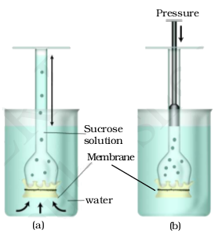
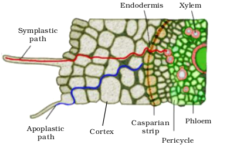

Chapter 11
Transport in Plants
Transport in Plants

Chapter 11
Transport in Plants
Chapter 12
Mineral Nutrition
Chapter 13
Photosynthesis in Higher Plants
Chapter 14
Respiration in Plants
Chapter 15
Plant Growth and Development
The description of structure and variation of living organisms over a period of time, ended up as two, apparently irreconcilable perspectives on biology. The two perspectives essentially rested on two levels of organisation of life forms and phenomena. One described at organismic and above level of organisation while the second described at cellular and molecular level of organisation. The first resulted in ecology and related disciplines. The second resulted in physiology and biochemistry. Description of physiological processes, in flowering plants as an example, is what is given in the chapters in this unit. The processes of mineral nutrition of plants, photosynthesis, transport, respiration and ultimately plant growth and development are described in molecular terms but in the context of cellular activities and even at organism level. Wherever appropriate, the relation of the physiological processes to environment is also discussed.
Melvin Calvin
Melvin Calvin born in Minnesota in April, 1911, received his Ph.D. in Chemistry from the University of Minnesota. He served as Professor of Chemistry at the University of California, Berkeley.
Just after world war II, when the world was under shock after the Hiroshima-Nagasaki bombings, and seeing the ill-effects of radio-activity, Calvin and co-workers put radio-activity to beneficial use. He along with J.A. Bassham studied reactions in green plants forming sugar and other substances from raw materials like carbon dioxide, water and minerals by labelling the carbon dioxide with C14. Calvin proposed that plants change light energy to chemical energy by transferring an electron in an organised array of pigment molecules and other substances. The mapping of the pathway of carbon assimilation in photosynthesis earned him Nobel Prize in 1961.
The principles of photosynthesis as established by Calvin are, at present, being used in studies on renewable resource for energy and materials and basic studies in solar energy research.
11.1 Means of Transport
11.2 Plant-Water Relations
11.3 Long Distance Transport of Water
11.4 Transpiration
11.5 Uptake and Transport of Mineral Nutrients
11.6 Phloem Transport: Flow from Source to Sink
Have you ever wondered how water reaches the top of tall trees, or for that matter how and why substances move from one cell to the other, whether all substances move in a similar way, in the same direction and whether metabolic energy is required for moving substances. Plants need to move molecules over very long distances, much more than animals do; they also do not have a circulatory system in place. Water taken up by the roots has to reach all parts of the plant, up to the very tip of the growing stem. The photosynthates or food synthesised by the leaves have also to be moved to all parts including the root tips embedded deep inside the soil. Movement across short distances, say within the cell, across the membranes and from cell to cell within the tissue has also to take place. To understand some of the transport processes that take place in plants, one would have to recollect one’s basic knowledge about the structure of the cell and the anatomy of the plant body. We also need to revisit our understanding of diffusion, besides gaining some knowledge about chemical potential and ions.
When we talk of the movement of substances we need first to define what kind of movement we are talking about, and also what substances we are looking at. In a flowering plant the substances that would need to be transported are water, mineral nutrients, organic nutrients and plant growth regulators. Over small distances substances move by diffusion and by cytoplasmic streaming supplemented by active transport. Transport over longer distances proceeds through the vascular system (the xylem and the phloem) and is called translocation.
An important aspect that needs to be considered is the direction of transport. In rooted plants, transport in xylem (of water and minerals) is essentially unidirectional, from roots to the stems. Organic and mineral nutrients however, undergo multidirectional transport. Organic compounds synthesised in the photosynthetic leaves are exported to all other parts of the plant including storage organs. From the storage organs they are later re-exported. The mineral nutrients are taken up by the roots and transported upwards into the stem, leaves and the growing regions. When any plant part undergoes senescence, nutrients may be withdrawn from such regions and moved to the growing parts. Hormones or plant growth regulators and other chemical stimuli are also transported, though in very small amounts, sometimes in a strictly polarised or unidirectional manner from where they are synthesised to other parts. Hence, in a flowering plant there is a complex traffic of compounds (but probably very orderly) moving in different directions, each organ receiving some substances and giving out some others.
11.1 Means of Transport
11.1.1 Diffusion
Movement by diffusion is passive, and may be from one part of the cell to the other, or from cell to cell, or over short distances, say, from the inter-cellular spaces of the leaf to the outside. No energy expenditure takes place. In diffusion, molecules move in a random fashion, the net result being substances moving from regions of higher concentration to regions of lower concentration. Diffusion is a slow process and is not dependent on a ‘living system’. Diffusion is obvious in gases and liquids, but diffusion in solids rather than of solids is more likely. Diffusion is very important to plants since it is the only means for gaseous movement within the plant body.
Diffusion rates are affected by the gradient of concentration, the permeability of the membrane separating them, temperature and pressure.
11.1.2 Facilitated Diffusion
As pointed out earlier, a gradient must already be present for diffusion to occur. The diffusion rate depends on the size of the substances; obviously smaller substances diffuse faster. The diffusion of any substance across a membrane also depends on its solubility in lipids, the major constituent of the membrane. Substances soluble in lipids diffuse through the membrane faster. Substances that have a hydrophilic moiety, find it difficult to pass through the membrane; their movement has to be facilitated. Membrane proteins provide sites at which such molecules cross the membrane. They do not set up a concentration gradient: a concentration gradient must already be present for molecules to diffuse even if facilitated by the proteins. This process is called facilitated diffusion.
In facilitated diffusion special proteins help move substances across membranes without expenditure of ATP energy. Facilitated diffusion cannot cause net transport of molecules from a low to a high concentration – this would require input of energy. Transport rate reaches a maximum when all of the protein transporters are being used (saturation). Facilitated diffusion is very specific: it allows cell to select substances for uptake. It is sensitive to inhibitors which react with protein side chains.
The proteins form channels in the membrane for molecules to pass through. Some channels are always open; others can be controlled. Some are large, allowing a variety of molecules to cross. The porins are proteins that form huge pores in the outer membranes of the plastids, mitochondria and some bacteria allowing molecules up to the size of small proteins to pass through.
Figure 11.1 shows an extracellular molecule bound to the transport protein; the transport protein then rotates and releases the molecule inside the cell, e.g., water channels – made up of eight different types of aquaporins.

Figure 11.1 Facilitated diffusion
11.1.2.1 Passive symports and antiports
Some carrier or transport proteins allow diffusion only if two types of molecules move together. In a symport, both molecules cross the membrane in the same direction; in an antiport, they move in opposite directions (Figure 11.2). When a molecule moves across a membrane independent of other molecules, the process is called uniport.

Figure 11.2 Facilitated diffusion
11.1.3 Active Transport
Active transport uses energy to pump molecules against a concentration gradient. Active transport is carried out by membrane-proteins. Hence different proteins in the membrane play a major role in both active as well as passive transport. Pumps are proteins that use energy to carry substances across the cell membrane. These pumps can transport substances from a low concentration to a high concentration (‘uphill’ transport). Transport rate reaches a maximum when all the protein transporters are being used or are saturated. Like enzymes the carrier protein is very specific in what it carries across the membrane. These proteins are sensitive to inhibitors that react with protein side chains.
11.1.4 Comparison of Different Transport Processes
Table 11.1 gives a comparison of the different transport mechanisms. Proteins in the membrane are responsible for facilitated diffusion and active transport and hence show common characterstics of being highly selective; they are liable to saturate, respond to inhibitors and are under hormonal regulation. But diffusion whether facilitated or not – take place only along a gradient and do not use energy.
Table 11.1 Comparison of Different Transport Mechanisms
| Property | Simple Diffusion |
Facilitated Transport |
Active Transport |
| Requires special membrane proteins |
No | Yes | Yes |
| Highly selective |
No | Yes | Yes |
| Transport saturates |
No |
Yes |
Yes |
| Uphill transport |
No |
No |
Yes |
| Requires ATP energy |
No |
No |
Yes |
11.2 Plant-Water Relations
Water is essential for all physiological activities of the plant and plays a very important role in all living organisms. It provides the medium in which most substances are dissolved. The protoplasm of the cells is nothing but water in which different molecules are dissolved and (several particles) suspended. A watermelon has over 92 per cent water; most herbaceous plants have only about 10 to 15 per cent of its fresh weight as dry matter. Of course, distribution of water within a plant varies – woody parts have relatively very little water, while soft parts mostly contain water. A seed may appear dry but it still has water – otherwise it would not be alive and respiring!
Terrestrial plants take up huge amount water daily but most of it is lost to the air through evaporation from the leaves, i.e., transpiration. A mature corn plant absorbs almost three litres of water in a day, while a mustard plant absorbs water equal to its own weight in about 5 hours. Because of this high demand for water, it is not surprising that water is often the limiting factor for plant growth and productivity in both agricultural and natural environments.
11.2.1 Water Potential
To comprehend plant-water relations, an understanding of certain standard terms is necessary. Water potential (Ψw) is a concept fundamental to understanding water movement. Solute potential (Ψs) and pressure potential (Ψp) are the two main components that determine water potential.
Water molecules possess kinetic energy. In liquid and gaseous form they are in random motion that is both rapid and constant. The greater the concentration of water in a system, the greater is its kinetic energy or ‘water potential’. Hence, it is obvious that pure water will have the greatest water potential. If two systems containing water are in contact, random movement of water molecules will result in net movement of water molecules from the system with higher energy to the one with lower energy. Thus water will move from the system containing water at higher water potential to the one having low water potential. This process of movement of substances down a gradient of free energy is called diffusion. Water potential is denoted by the Greek symbol Psi or Ψ and is expressed in pressure units such as pascals (Pa). By convention, the water potential of pure water at standard temperatures, which is not under any pressure, is taken to be zero.
If some solute is dissolved in pure water, the solution has fewer free water and the concentration of water decreases, reducing its water potential. Hence, all solutions have a lower water potential than pure water; the magnitude of this lowering due to dissolution of a solute is called solute potential or Ψs. Ψs is always negative. The more the solute molecules, the lower (more negative) is the Ψs . For a solution at atmospheric pressure (water potential) Ψw = (solute potential) Ψs.
If a pressure greater than atmospheric pressure is applied to pure water or a solution, its water potential increases. It is equivalent to pumping water from one place to another. Can you think of any system in our body where pressure is built up? Pressure can build up in a plant system when water enters a plant cell due to diffusion causing a pressure built up against the cell wall, it makes the cell turgid (see section 11.2.2); this increases the pressure potential. Pressure potential is usually positive, though in plants negative potential or tension in the water column in the xylem plays a major role in water transport up a stem. Pressure potential is denoted as Ψp.
Water potential of a cell is affected by both solute and pressure potential. The relationship between them is as follows:
Ψw = Ψs + Ψp
11.2.2 Osmosis
The plant cell is surrounded by a cell membrane and a cell wall. The cell wall is freely permeable to water and substances in solution hence is not a barrier to movement. In plants the cells usually contain a large central vacuole, whose contents, the vacuolar sap, contribute to the solute potential of the cell. In plant cells, the cell membrane and the membrane of the vacuole, the tonoplast together are important determinants of movement of molecules in or out of the cell.
Osmosis is the term used to refer specifically to the diffusion of water across a differentially- or semi-permeable membrane. Osmosis occurs spontaneously in response to a driving force. The net direction and rate of osmosis depends on both the pressure gradient and concentration gradient. Water will move from its region of higher chemical potential (or concentration) to its region of lower chemical potential until equilibrium is reached. At equilibrium the two chambers should have the same water potential.
You may have made a potato osmometer at some earlier stage in school. If the tuber is placed in water, the cavity in the potato tuber containing a concentrated solution of sugar collects water due to osmosis.
Study Figure 11.3 in which the two chambers, A and B, containing solutions are separated by a semi-permeable membrane.
(a) Solution of which chamber has a lower water potential?
(b) Solution of which chamber has a lower solute potential?
(c) In which direction will osmosis occur?
(d) Which solution has a higher solute potential?
(e) At equilibrium which chamber will have lower water potential?
(f) If one chamber has a Ψ of – 2000 kPa, and the other – 1000 kPa, which is the chamber that has the higher Ψ?
Figure 11.3
Let us discuss another experiment where a solution of sucrose in water taken in a funnel is separated from pure water in a beaker through a semi-permeable membrane (Figure 11.4). You can get this kind of a membrane in an egg. Remove the yolk and albumin through a small hole at one end of the egg, and place the shell in dilute solution of hydrochloric acid for a few hours. The egg shell dissolves leaving the membrane intact. Water will move into the funnel, resulting in rise in the level of the solution in the funnel. This will continue till the equilibrium is reached. In case sucrose does diffuse out through the membrane, will this equilibrium be ever reached?
External pressure can be applied from the upper part of the funnel such that no water diffuses into the funnel through the membrane. This pressure required to prevent water from diffusing is in fact, the osmotic pressure and this is the function of the solute concentration; more the solute concentration, greater will be the pressure required to prevent water from diffusing in. Numerically osmotic pressure is equivalent to the osmotic potential, but the sign is opposite.Osmotic pressure is the positive pressure applied, while osmotic potential is negative.

Figure 11.4 A demonstration of osmosis. A thistle funnel is filled with sucrose solution and kept inverted in a beaker containing water. (a) Water will diffuse across the membrane (as shown by arrows) to raise the level of the solution in the funnel (b) Pressure can be applied as shown to stop the water movement into the funnel
11.2.3 Plasmolysis
The behaviour of the plant cells (or tissues) with regard to water movement depends on the surrounding solution. If the external solution balances the osmotic pressure of the cytoplasm, it is said to be isotonic. If the external solution is more dilute than the cytoplasm, it is hypotonic and if the external solution is more concentrated, it is hypertonic. Cells swell in hypotonic solutions and shrink in hypertonic ones.
Plasmolysis occurs when water moves out of the cell and the cell membrane of a plant cell shrinks away from its cell wall. This occurs
Figure 11.5 Plant cell plasmolysis
when the cell (or tissue) is placed in a solution that is hypertonic (has more solutes) to the protoplasm. Water moves out; it is first lost from the cytoplasm and then from the vacuole. The water when drawn out of the cell through diffusion into the extracellular (outside cell) fluid causes the protoplast to shrink away from the walls. The cell is said to be plasmolysed. The movement of water occurred across the membrane moving from an area of high water potential (i.e., the cell) to an area of lower water potential outside the cell (Figure 11.5).
What occupies the space between the cell wall and the shrunken protoplast in the plasmolysed cell?
When the cell (or tissue) is placed in an isotonic solution, there is no net flow of water towards the inside or outside. If the external solution balances the osmotic pressure of the cytoplasm it is said to be isotonic. When water flows into the cell and out of the cell and are in equilibrium, the cells are said to be flaccid.
The process of plasmolysis is usually reversible. When the cells are placed in a hypotonic solution (higher water potential or dilute solution as compared to the cytoplasm), water diffuses into the cell causing the cytoplasm to build up a pressure against the wall, that is called turgor pressure. The pressure exerted by the protoplasts due to entry of water against the rigid walls is called pressure potential Ψp. Because of the rigidity of the cell wall, the cell does not rupture. This turgor pressure is ultimately responsible for enlargement and extension growth of cells.
What would be the Ψp of a flaccid cell? Which organisms other than plants possess cell wall ?
11.2.4 Imbibition
Imbibition is a special type of diffusion when water is absorbed by solids – colloids – causing them to enormously increase in volume. The classical examples of imbibition are absorption of water by seeds and dry wood. The pressure that is produced by the swelling of wood had been used by prehistoric man to split rocks and boulders. If it were not for the pressure due to imbibition, seedlings would not have been able to emerge out of the soil into the open; they probably would not have been able to establish!
Imbibition is also diffusion since water movement is along a concentration gradient; the seeds and other such materials have almost no water hence they absorb water easily. Water potential gradient between the absorbent and the liquid imbibed is essential for imbibition. In addition, for any substance to imbibe any liquid, affinity between the adsorbant and the liquid is also a pre-requisite.
11.3 Long Distance Transport of Water
At some earlier stage you might have carried out an experiment where you had placed a twig bearing white flowers in coloured water and had watched it turn colour. On examining the cut end of the twig after a few hours you had noted the region through which the coloured water moved. That experiment very easily demonstrates that the path of water movement is through the vascular bundles, more specifically, the xylem. Now we have to go further and try and understand the mechanism of movement of water and other substances up a plant.
Long distance transport of substances within a plant cannot be by diffusion alone. Diffusion is a slow process. It can account for only short distance movement of molecules. For example, the movement of a molecule across a typical plant cell (about 50 µm) takes approximately 2.5 s. At this rate, can you calculate how many years it would take for the movement of molecules over a distance of 1 m within a plant by diffusion alone?
In large and complex organisms, often substances have to be moved across very large distances. Sometimes the sites of production or absorption and sites of storage are too far from each other; diffusion or active transport would not suffice. Special long distance transport systems become necessary so as to move substances across long distances and at a much faster rate. Water and minerals, and food are generally moved by a mass or bulk flow system. Mass flow is the movement of substances in bulk or en masse from one point to another as a result of pressure differences between the two points. It is a characteristic of mass flow that substances, whether in solution or in suspension, are swept along at the same pace, as in a flowing river. This is unlike diffusion where different substances move independently depending on their concentration gradients. Bulk flow can be achieved either through a positive hydrostatic pressure gradient (e.g., a garden hose) or a negative hydrostatic pressure gradient (e.g., suction through a straw).
The bulk movement of substances through the conducting or vascular tissues of plants is called translocation.
Do you remember studying cross sections of roots, stems and leaves of higher plants and studying the vascular system? The higher plants have highly specialised vascular tissues – xylem and phloem. Xylem is associated with translocation of mainly water, mineral salts, some organic nitrogen and hormones, from roots to the aerial parts of the plants. The phloem translocates a variety of organic and inorganic solutes, mainly from the leaves to other parts of the plants.
11.3.1 How do Plants Absorb Water?
We know that the roots absorb most of the water that goes into plants; obviously that is why we apply water to the soil and not on the leaves. The responsibility of absorption of water and minerals is more specifically the function of the root hairs that are present in millions at the tips of the roots. Root hairs are thin-walled slender extensions of root epidermal cells that greatly increase the surface area for absorption. Water is absorbed along with mineral solutes, by the root hairs, purely by diffusion. Once water is absorbed by the root hairs, it can move deeper into root layers by two distinct pathways:
• apoplast pathway
• symplast pathway

Figure 11.6 Pathway of water movement in the root
The apoplast is the system of adjacent cell walls that is continuous throughout the plant, except at the casparian strips of the endodermis in the roots (Figure 11.6). The apoplastic movement of water occurs exclusively through the intercellular spaces and the walls of the cells. Movement through the apoplast does not involve crossing the cell membrane. This movement is dependent on the gradient. The apoplast does not provide any barrier to water movement and water movement is through mass flow. As water evaporates into the intercellular spaces or the atmosphere, tension develop in the continuous stream of water in the apoplast, hence mass flow of water occurs due to the adhesive and cohesive properties of water.
The symplastic system is the system of interconnected protoplasts. Neighbouring cells are connected through cytoplasmic strands that extend through plasmodesmata. During symplastic movement, the water travels through the cells – their cytoplasm; intercellular movement is through the plasmodesmata. Water has to enter the cells through the cell membrane, hence the movement is relatively slower. Movement is again down a potential gradient. Symplastic movement may be aided by cytoplasmic streaming. You may have observed cytoplasmic streaming in cells of the Hydrilla leaf; the movement of chloroplast due to streaming is easily visible.
Most of the water flow in the roots occurs via the apoplast since the cortical cells are loosely packed, and hence offer no resistance to water movement. However, the inner boundary of the cortex, the endodermis, is impervious to water because of a band of suberised matrix called the casparian strip. Water molecules are unable to penetrate the layer, so they are directed to wall regions that are not suberised, into the cells proper through the membranes. The water then moves through the symplast and again crosses a membrane to reach the cells of the xylem. The movement of water through the root layers is ultimately symplastic in the endodermis. This is the only way water and other solutes can enter the vascular cylinder.

Figure 11.7 Symplastic and apoplastic pathways of water and ion absorption and movement in roots
Once inside the xylem, water is again free to move between cells as well as through them. In young roots, water enters directly into the xylem vessels and/or tracheids. These are non-living conduits and so are parts of the apoplast. The path of water and mineral ions into the root vascular system is summarised in Figure 11.7.
Some plants have additional structures associated with them that help in water (and mineral) absorption. A mycorrhiza is a symbiotic association of a fungus with a root system. The fungal filaments form a network around the young root or they penetrate the root cells. The hyphae have a very large surface area that absorb mineral ions and water from the soil from a much larger volume of soil that perhaps a root cannot do. The fungus provides minerals and water to the roots, in turn the roots provide sugars and N-containing compounds to the mycorrhizae. Some plants have an obligate association with the mycorrhizae. For example, Pinus seeds cannot germinate and establish without the presence of mycorrhizae.
11.3.2 Water Movement up a Plant
We looked at how plants absorb water from the soil, and move it into the vascular tissues. We now have to try and understand how this water is transported to various parts of the plant. Is the water movement active, or is it still passive? Since the water has to be moved up a stem against gravity, what provides the energy for this?
11.3.2.1 Root Pressure
As various ions from the soil are actively transported into the vascular tissues of the roots, water follows (its potential gradient) and increases the pressure inside the xylem. This positive pressure is called root pressure, and can be responsible for pushing up water to small heights in the stem. How can we see that root pressure exists? Choose a small soft-stemmed plant and on a day, when there is plenty of atmospheric moisture, cut the stem horizontally near the base with a sharp blade, early in the morning. You will soon see drops of solution ooze out of the cut stem; this comes out due to the positive root pressure. If you fix a rubber tube to the cut stem as a sleeve you can actually collect and measure the rate of exudation, and also determine the composition of the exudates. Effects of root pressure is also observable at night and early morning when evaporation is low, and excess water collects in the form of droplets around special openings of veins near the tip of grass blades, and leaves of many herbaceous parts. Such water loss in its liquid phase is known as guttation.
Root pressure can, at best, only provide a modest push in the overall process of water transport. They obviously do not play a major role in water movement up tall trees. The greatest contribution of root pressure may be to re-establish the continuous chains of water molecules in the xylem which often break under the enormous tensions created by transpiration. Root pressure does not account for the majority of water transport; most plants meet their need by transpiratory pull.
11.3.2.2 Transpiration pull
Despite the absence of a heart or a circulatory system in plants, the flow of water upward through the xylem in plants can achieve fairly high rates, up to 15 metres per hour. How is this movement accomplished? A long standing question is, whether water is ‘pushed’ or ‘pulled’ through the plant. Most researchers agree that water is mainly ‘pulled’ through the plant, and that the driving force for this process is transpiration from the leaves. This is referred to as the cohesion-tension-transpiration pull model of water transport. But, what generates this transpirational pull?
Water is transient in plants. Less than 1 per cent of the water reaching the leaves is used in photosynthesis and plant growth. Most of it is lost through the stomata in the leaves. This water loss is known as transpiration.
You have studied transpiration in an earlier class by enclosing a healthy plant in polythene bag and observing the droplets of water formed inside the bag. You could also study water loss from a leaf using cobalt chloride paper, which turns colour on absorbing water.
11.4 Transpiration
Transpiration is the evaporative loss of water by plants. It occurs mainly through the stomata in the leaves. Besides the loss of water vapour in transpiration, exchange of oxygen and carbon dioxide in the leaf also occurs through pores called stomata (sing. : stoma). Normally stomata are open in the day time and close during the night. The immediate cause of the opening or closing of the stomata is a change in the turgidity of the guard cells. The inner wall of each guard cell, towards the pore or stomatal aperture, is thick and elastic. When turgidity increases within the two guard cells flanking each stomatal aperture or pore, the thin outer walls bulge out and force the inner walls into a crescent shape. The opening of the stoma is also aided due to the orientation of the microfibrils in the cell walls of the guard cells. Cellulose microfibrils are oriented radially rather than longitudinally making it easier for the stoma to open. When the guard cells lose turgor, due to water loss (or water stress) the elastic inner walls regain their original shape, the guard cells become flaccid and the stoma closes.

Figure11.8 A stomatal aperture with guard cells
Usually the lower surface of a dorsiventral (often dicotyledonous) leaf has a greater number of stomata while in an isobilateral (often monocotyledonous) leaf they are about equal on both surfaces. Transpiration is affected by several external factors: temperature, light, humidity, wind speed. Plant factors that affect transpiration include number and distribution of stomata, per cent of open stomata, water status of the plant, canopy structure etc.
The transpiration driven ascent of xylem sap depends mainly on the following physical properties of water:
• Cohesion – mutual attraction between water molecules.
• Adhesion – attraction of water molecules to polar surfaces (such as the surface of tracheary elements).
• Surface Tension – water molecules are attracted to each other in the liquid phase more than to water in the gas phase.
These properties give water high tensile strength, i.e., an ability to resist a pulling force, and high capillarity, i.e., the ability to rise in thin tubes. In plants capillarity is aided by the small diameter of the tracheary elements – the tracheids and vessel elements.
The process of photosynthesis requires water. The system of xylem vessels from the root to the leaf vein can supply the needed water. But what force does a plant use to move water molecules into the leaf parenchyma cells where they are needed? As water evaporates through the stomata, since the thin film of water over the cells is continuous, it results in pulling of water, molecule by molecule, into the leaf from the xylem. Also, because of lower concentration of water vapour in the atmosphere as compared to the substomatal cavity and intercellular spaces, water diffuses into the surrounding air. This creates a ‘pull’ (Figure 11.9).
Measurements reveal that the forces generated by transpiration can create pressures sufficient to lift a xylem sized column of water over 130 metres high.

11.4.1 Transpiration and Photosynthesis – a Compromise
Transpiration has more than one purpose; it
• creates transpiration pull for absorption and transport of plants
• supplies water for photosynthesis
• transports minerals from the soil to all parts of the plant
• cools leaf surfaces, sometimes 10 to 15 degrees, by evaporative cooling
• maintains the shape and structure of the plants by keeping cells turgid
An actively photosynthesising plant has an insatiable need for water. Photosynthesis is limited by available water which can be swiftly depleted by transpiration. The humidity of rainforests is largely due to this vast cycling of water from root to leaf to atmosphere and back to the soil.
The evolution of the C4 photosynthetic system is probably one of the strategies for maximising the availability of CO2 while minimising water loss. C4 plants are twice as efficient as C3 plants in terms of fixing carbon (making sugar). However, a C4 plant loses only half as much water as a C3 plant for the same amount of CO2 fixed.
11.5 Uptake and Transport of Mineral Nutrients
Plants obtain their carbon and most of their oxygen from CO2 in the atmosphere. However, their remaining nutritional requirements are obtained from minerals and water for hydrogen in the soil.
11.5.1 Uptake of Mineral Ions
Unlike water, all minerals cannot be passively absorbed by the roots. Two factors account for this: (i) minerals are present in the soil as charged particles (ions) which cannot move across cell membranes and (ii) the concentration of minerals in the soil is usually lower than the concentration of minerals in the root. Therefore, most minerals must enter the root by active absorption into the cytoplasm of epidermal cells. This needs energy in the form of ATP. The active uptake of ions is partly responsible for the water potential gradient in roots, and therefore for the uptake of water by osmosis. Some ions also move into the epidermal cells passively.
Ions are absorbed from the soil by both passive and active transport. Specific proteins in the membranes of root hair cells actively pump ions from the soil into the cytoplasms of the epidermal cells. Like all cells, the endodermal cells have many transport proteins embedded in their plasma membrane; they let some solutes cross the membrane, but not others. Transport proteins of endodermal cells are control points, where a plant adjusts the quantity and types of solutes that reach the xylem. Note that the root endodermis because of the layer of suberin has the ability to actively transport ions in one direction only.
11.5.2 Translocation of Mineral Ions
After the ions have reached xylem through active or passive uptake, or a combination of the two, their further transport up the stem to all parts of the plant is through the transpiration stream.
The chief sinks for the mineral elements are the growing regions of the plant, such as the apical and lateral meristems, young leaves, developing flowers, fruits and seeds, and the storage organs. Unloading of mineral ions occurs at the fine vein endings through diffusion and active uptake by these cells.
Mineral ions are frequently remobilised, particularly from older, senescing parts. Older dying leaves export much of their mineral content to younger leaves. Similarly, before leaf fall in decidous plants, minerals are removed to other parts. Elements most readily mobilised are phosphorus, sulphur, nitrogen and potassium. Some elements that are structural components like calcium are not remobilised.
An analysis of the xylem exudates shows that though some of the nitrogen travels as inorganic ions, much of it is carried in the organic form as amino acids and related compounds. Similarly, small amounts of P and S are carried as organic compounds. In addition, small amount of exchange of materials does take place between xylem and phloem. Hence, it is not that we can clearly make a distinction and say categorically that xylem transports only inorganic nutrients while phloem transports only organic materials, as was traditionally believed.
11.6 Phloem Transport: Flow from Source to Sink
Food, primarily sucrose, is transported by the vascular tissue phloem from a source to a sink. Usually the source is understood to be that part of the plant which synthesises the food, i.e., the leaf, and sink, the part that needs or stores the food. But, the source and sink may be reversed depending on the season, or the plant’s needs. Sugar stored in roots may be mobilised to become a source of food in the early spring when the buds of trees, act as sink; they need energy for growth and development of the photosynthetic apparatus. Since the source-sink relationship is variable, the direction of movement in the phloem can be upwards or downwards, i.e., bi-directional. This contrasts with that of the xylem where the movement is always unidirectional, i.e., upwards. Hence, unlike one-way flow of water in transpiration, food in phloem sap can be transported in any required direction so long as there is a source of sugar and a sink able to use, store or remove the sugar.
Phloem sap is mainly water and sucrose, but other sugars, hormones and amino acids are also transported or translocated through phloem.
11.6.1 The Pressure Flow or Mass Flow Hypothesis
The accepted mechanism used for the translocation of sugars from source to sink is called the pressure flow hypothesis. (see Figure 11.10). As glucose is prepared at the source (by photosynthesis) it is converted to sucrose (a dissacharide). The sugar is then moved in the form of sucrose into the companion cells and then into the living phloem sieve tube cells by active transport. This process of loading at the source produces a hypertonic condition in the phloem. Water in the adjacent xylem moves into the phloem by osmosis. As osmotic pressure builds up the phloem sap will move to areas of lower pressure. At the sink osmotic pressure must be reduced. Again active transport is necessary to move the sucrose out of the phloem sap and into the cells which will use the sugar – converting it into energy, starch, or cellulose. As sugars are removed, the osmotic pressure decreases and water moves out of the phloem.
To summarise, the movement of sugars in the phloem begins at the source, where sugars are loaded (actively transported) into a sieve tube. Loading of the phloem sets up a water potential gradient that facilitates the mass movement in the phloem.

Figure11.10 Diagrammatic presentation of mechanism of translocation
Phloem tissue is composed of sieve tube cells, which form long columns with holes in their end walls called sieve plates. Cytoplasmic strands pass through the holes in the sieve plates, so forming continuous filaments. As hydrostatic pressure in the phloem sieve tube increases, pressure flow begins, and the sap moves through the phloem. Meanwhile, at the sink, incoming sugars are actively transported out of the phloem and removed as complex carbohydrates. The loss of solute produces a high water potential in the phloem, and water passes out, returning eventually to xylem.
A simple experiment, called girdling, was used to identify the tissues through which food is transported. On the trunk of a tree a ring of bark up to a depth of the phloem layer, can be carefully removed. In the absence of downward movement of food the portion of the bark above the ring on the stem becomes swollen after a few weeks. This simple experiment shows that phloem is the tissue responsible for translocation of food; and that transport takes place in one direction, i.e., towards the roots. This experiment can be performed by you easily.
Summary
Plants obtain a variety of inorganic elements (ions) and salts from their surroundings especially from water and soil. The movement of these nutrients from environment into the plant as well as from one plant cell to another plant cell essentially involves movement across a cell membrane. Transport across cell membrane can be through diffusion, facilitated transport or active transport. Water and minerals absorbed by roots are transported by xylem and the organic material synthesised in the leaves is transported to other parts of plant through phloem.
Passive transport (diffusion, osmosis) and active transport are the two modes of nutrient transport across cell membranes in living organisms. In passive transport, nutrients move across the membrane by diffusion, without any use of energy as it is always down the concentration gradient and hence entropy driven. This diffusion of substances depends on their size, solubility in water or organic solvents. Osmosis is the special type of diffusion of water across a semi-permeable membrane which depends on pressure gradient and concentration gradient. In active transport, energy in the form of ATP is utilised to pump molecules against a concentration gradient across membranes. Water potential is the potential energy of water which helps in the movement of water. It is determined by solute potential and pressure potential. The behaviour of the cells depends on the surrounding solution. If the surrounding solution of the cell is hypertonic, it gets plasmolysed. The absorption of water by seeds and drywood takes place by a special type of diffusion called imbibition.
In higher plants, there is a vascular system, xylem and phloem, responsible for translocation. Water minerals and food cannot be moved within the body of a plant by diffusion alone. They are therefore, transported by a mass flow system – movement of substance in bulk from one point to another as a result of pressure differences between the two points.
Water absorbed by root hairs moves deeper into the root by two distinct pathways, i.e., apoplast and symplast. Various ions, and water from soil can be transported upto a small height in stems by root pressure. Transpiration pull model is the most acceptable to explain the transport of water. Transpiration is the loss of water in the form of vapours from the plant parts through stomata. Temperature, light, humidity, wind speed and number of stomata affect the rate of transpiration. Excess water is also removed through tips of leaves of plants by guttation.
Phloem is responsible for transport of food (primarily) sucrose from the source to the sink. The translocation in phloem is bi-directional; the source-sink relationship is variable. The translocation in phloem is explained by the pressure-flow hypothesis.
Exercises
1. What are the factors affecting the rate of diffusion?
2. What are porins? What role do they play in diffusion?
3. Describe the role played by protein pumps during active transport in plants.
4. Explain why pure water has the maximum water potential.
5. Differentiate between the following:
(a) Diffusion and Osmosis
(b) Transpiration and Evaporation
(c) Osmotic Pressure and Osmotic Potential
(d) Imbibition and Diffusion
(e) Apoplast and Symplast pathways of movement of water in plants.
(f) Guttation and Transpiration.
6. Briefly describe water potential. What are the factors affecting it?
7. What happens when a pressure greater than the atmospheric pressure is applied to pure water or a solution?
8. (a) With the help of well-labelled diagrams, describe the process of plasmolysis in plants, giving appropriate examples.
(b) Explain what will happen to a plant cell if it is kept in a solution having higher water potential.
9. How is the mycorrhizal association helpful in absorption of water and minerals in plants?
10. What role does root pressure play in water movement in plants?
11. Describe transpiration pull model of water transport in plants. What are the factors influencing transpiration? How is it useful to plants?
12. Discuss the factors responsible for ascent of xylem sap in plants.
13. What essential role does the root endodermis play during mineral absorption in plants?
14. Explain why xylem transport is unidirectional and phloem transport
bi-directional.
15. Explain pressure flow hypothesis of translocation of sugars in plants.
16. What causes the opening and closing of guard cells of stomata during transpiration?